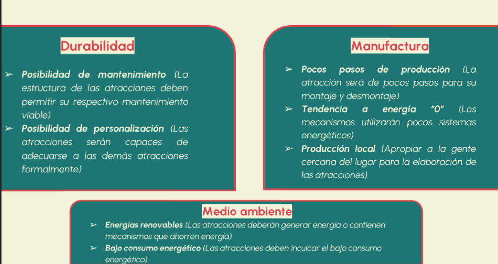
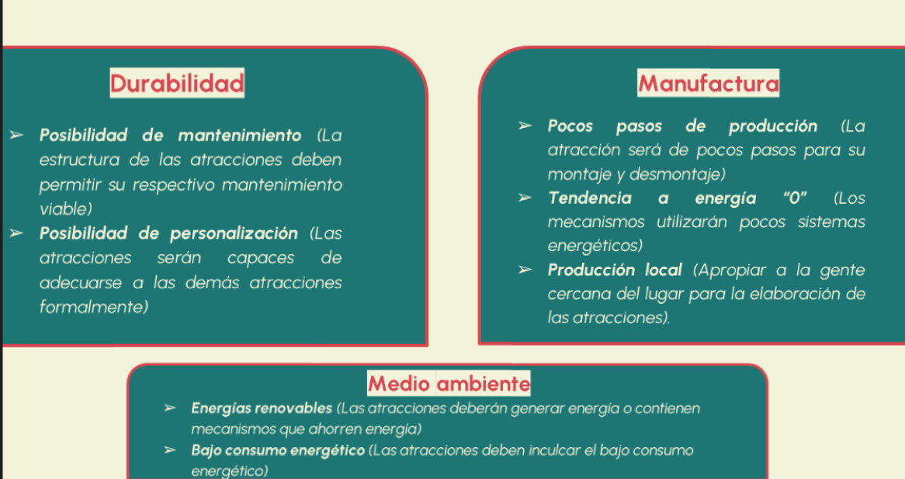

Parque Acualago
Bienvenidos a la Bitácora de un grupo de investigación de la UDI sobre
el Parque Acualago y su pasado. Aquí, compartiremos nuestros hallazgos
y descubrimientos sobre la historia y evolución de este hermoso parque
acuático. Desde su construcción hasta su impacto en la comunidad
local, exploraremos todo lo que hace que el Parque Acualago sea un
lugar tan especial.
Nuesra Filosofia
Creemos que es importante preservar y proteger los espacios naturales
y recreativos para las generaciones futuras. Al investigar y
documentar la historia del Parque Acualago, esperamos crear conciencia
sobre la importancia de su conservación y promover prácticas
sostenibles para su mantenimiento.
 
